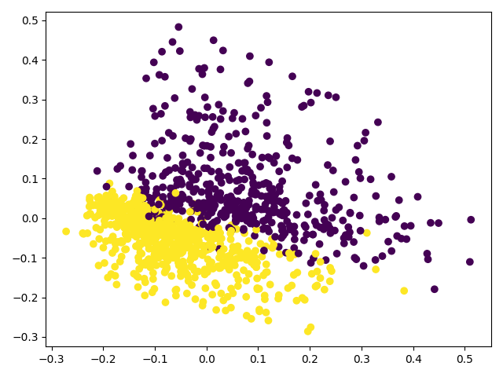

텍스트 Clustering
지금까지 우리는 텍스트가 어떻게 구성되어 있는지에 대해 알아보았습니다.
POS tag와 NER tag를 했을 때, 어떤 종류의 단어가 우리의 문서에 나오는지 알 수 있었고, topic modeling을 통해 우리 텍스트에 어떤 토픽이 있는지 알 수 있었습니다.
당연하게도, 우리는 토픽 모델을 가지고 문서들을 cluster할 수 있지만, topic model은 그런 목적이 아닙니다.
topic model을 가지고 한다면 좋지 않은 결과를 얻을 가능성이 큽니다.
시작하기 전에, cluster과 classification의 차이를 알아봅시다.
Clustering과 Classification 모두 데이터를 그룹핑한다는 목적에서 공통점이 있지만, Clustering은 비지도 학습이고, Classification은 지도 학습이라는 데서 큰 차이점이 있습니다.
Clustering 시작하기
다른 text analysis algorithm처럼, 가장 중요한 것은 역시 전처리입니다.
불용어와 lemmatizing words를 제거해야 합니다.
이를 다 마친 후에는, document를 vector representation으로 바꿔야 합니다.
이번에는 scikit-learn을 이용해서 Clustering을 시작하도록 하겠습니다.
from sklearn.datasets import fetch_20newsgroups
import numpy as np
categories = [
'alt.atheism',
'talk.religion.misc',
'comp.graphics',
'sci.space',
]
dataset = fetch_20newsgroups(subset='all', categories=categories, shuffle=True, random_state=42)
labels = dataset.target
true_k = np.unique(labels).shape[0]
data = dataset.data
20 NewsGroups dataset을 가져와서 4개의 카테고리만 뽑아냈습니다.
이렇게 데이터를 뽑아온 후 컴퓨터가 쉽게 다룰 수 있는 벡터 타입으로 document를 변환해야 합니다.
scikit-learn의 내장 TfidfVectorizer를 사용해서 손쉽게 변환해 보겠습니다.
from sklearn.feature_extraction.text import TfidfVectorizer
vectorizer = TfidfVectorizer(max_df=0.5, min_df=2, stop_words='english', use_idf=True)
X = vectorizer.fit_transform(data)
X는 TF-IDF 표현으로 변환된 벡터를 담게 됩니다.
데이터를 더 잘 이해하기 위해서, visualize하는 것도 중요합니다.
우리는 PCA(주성분 분석)를 통해 고차원의 데이터를 2차원으로 바꾸려고 합니다.
데이터를 바꾼 후 그래프로 그리는 것까지 해보겠습니다.
from sklearn.feature_extraction.text import CountVectorizer, TfidfTransformer
from sklearn.decomposition import PCA
from sklearn.pipeline import Pipeline
import matplotlib.pyplot as plt
newsgroups_train = fetch_20newsgroups(subset='train', categories=['alt.atheism', 'sci.space'])
pipeline = Pipeline([
('vect', CountVectorizer()),
('tfidf', TfidfTransformer()),
])
X_visualise = pipeline.fit_transform(newsgroups_train.data).todense()
pca = PCA(n_components=2).fit(X_visualise)
data2D = pca.transform(X_visualise)
plt.scatter(data2D[:,0], data2D[:,1], c=newsgroups_train.target)
plt.show()
코드를 살펴보면, data를 2개의 카테고리만 로드해서 count-vectorizer와 TF-IDF transformation만 진행했습니다.
그 후, PCA 모델을 적용해서 2개의 key component만 사용하게 했습니다.
이렇게 되면 dataset이 2개의 그룹으로 분리가 되어 있는 모습을 볼 수 있습니다.
결과는 다음과 같이 나오게 됩니다.

이전에 보던 벡터 X로 돌아와서 clustering을 위해 준비해 보겠습니다.
from sklearn.pipeline import make_pipeline
from sklearn.decomposition import TruncatedSVD
from sklearn.preprocessing import Normalizer
n_components = 5
svd = TruncatedSVD(n_components)
normalizer = Normalizer(copy=False)
lsa = make_pipeline(svd, normalizer)
X = lsa.fit_transform(X)
최종적으로 X는 정제되고, TF-IDF transformed되고, SVD를 통해 dimension도 축소되었습니다.
이제 clustering을 할 준비가 다 되었습니다.